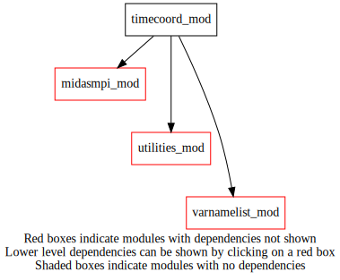
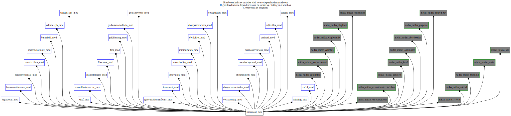

Dependency Diagrams:
 Direct Dependency Diagram¶
 Reverse Dependency Diagram¶
Description
MODULE timeCoord (prefix=’tim’ category=’7. Low-level data objects’)
- Purpose
To store public variables and procedures related to the time coordinate.
Quick access
- Variables
tim_dstepobs,tim_dstepobsinc,tim_fullyuseextremetimebins,tim_nstepobs,tim_nstepobsinc,tim_referencetime,tim_windowsize- Routines
tim_datestamptoyyyymmddhh(),tim_getdatestamp(),tim_getdatestampfromenvvar(),tim_getdatestampfromfile(),tim_getstamplist(),tim_getstepobsindex(),tim_getvaliddatetimefromlist(),tim_initialized(),tim_readnml(),tim_setdatestamp(),tim_setup()Needed modules
midasmpi_mod: MODULE midasMpi_mod (prefix=’mmpi’ category=’8. Low-level utilities and constants’)
varnamelist_mod: MODULE varNameList (prefix=’vnl’ category=’7. Low-level data objects’)
utilities_mod: MODULE utilities_mod (prefix=’utl’ category=’8. Low-level utilities and constants’)Variables
- timecoord_mod/tim_dstepobs [real,public]¶
- timecoord_mod/tim_dstepobsinc [real,public]¶
- timecoord_mod/tim_fullyuseextremetimebins [logical,public]¶
- timecoord_mod/tim_nstepobs [integer,public]¶
- timecoord_mod/tim_nstepobsinc [integer,public]¶
- timecoord_mod/tim_referencetime [character,public]¶
- timecoord_mod/tim_windowsize [real,public]¶
Subroutines and functions
- subroutine timecoord_mod/tim_readnml()¶
- Purpose
Read the namelist block NAMTIME.
- Namelist parameters
- dstepobs
time step (hrs) between successive trial fields for use in OmP determation. Set to dwindowsize for single trial field, i.e. use of 3dvar instead of 3dvar-FGAT. nstepobs = number of trial fields
- dstepobsinc
time step (hrs) between obs groupings in time. Set to dwindowsize for use of a single obs group. nstepobsinc = number of obs time intervals
- dwindowsize
Time window size (hrs).
- Comment
Provided dates and number of provided trial field files must be consistent with nstepobs, dstepobs and dwindowsize with reference datestamp corresponding to the date of the middle trial field file.
- Called from
- Call to
- subroutine timecoord_mod/tim_getdatestampfromenvvar(datestamp)¶
- Purpose
Determine the date from the environment variable MIDAS_DATE.
- Arguments
datestamp [integer ,inout]
- Called from
- Call to
- subroutine timecoord_mod/tim_setup([filenamefordate_opt])¶
- Purpose
Setup of obs time window size and related trial field time step for OmP determination.
- Options
filenamefordate_opt [character ]
- Called from
omf_ominusf(),omf_ominusfens(),midas_sstbias,midas_ssttrial,midas_adjointtest,midas_analysiserroroi,midas_calcstats,midas_diagbmatrix,midas_diaghbht,midas_enspostprocess,midas_ensembleh,midas_extractbmatrixfor1dvar,midas_gencoeff,midas_letkf,midas_obsimpact,midas_obsselection,midas_prepcma,midas_randompert,midas_thinning,midas_var,midas_var1d- Call to
tim_readnml(),tim_getdatestampfromenvvar(),tim_getdatestampfromfile()
- function timecoord_mod/tim_initialized()¶
- Return
initialized_out [logical ]
- Called from
- function timecoord_mod/tim_getdatestampfromfile(filename[, varnamefordate_opt])¶
- Purpose
to extract the dateStamp from the supplied file.
- Arguments
filename [character ]
- Options
varnamefordate_opt [character ]
- Return
datestamp_out [integer ]
- Called from
calclocalvertcorrmatrix(),oobs_pseudosst(),tim_setup(),midas_gencoeff,midas_randompert- Call to
- subroutine timecoord_mod/tim_setdatestamp(datestamp_in)¶
- Purpose
to control access to the minimization object. Sets the date of the window centre of analysis validity to the indicated value.
- Arguments
datestamp_in [integer ,in]
- Called from
midas_sstbias,midas_analysiserroroi,midas_diaghbht,midas_extractbmatrixfor1dvar,midas_gencoeff,midas_letkf,midas_obsimpact,midas_prepcma,midas_randompert,midas_thinning,midas_var,midas_var1d- Call to
- function timecoord_mod/tim_getdatestamp()¶
- Purpose
to control access to the minimization object. Returns the date of the window centre of analysis validity.
- Return
datestamp_out [integer ]
- Called from
ocebg_bgcheckseaice(),bcs_removeoutliers(),bmat1d_setupbens(),ben_setuponeinstance(),ensemblediagnostic(),horizcorrelfunction(),calclocalcorrelations(),csl_computebhi(),csl_toolbox(),enkf_letkfanalyses(),enkf_computevertlocation(),ens_copyensmean(),ens_copyensstddev(),ens_copymember(),ens_writeensemble(),epp_postprocess(),epp_writetoallmembers(),epp_addrandompert(),epp_selectsubsample(),epp_hybridrecentering(),fso_ensemble(),calcfcsterror(),gbi_stddev_ens(),gvt_setupreffromtrialfiles(),gvt_setupreffromstatevector(),uvtopsichi_ens(),uvtovortdiv_ens(),gio_readtrials(),inc_computehighresanalysis(),inc_analpostprocessing(),inc_writeincandanalhighres(),inc_writeincrement(),inc_writeanalysis(),inc_interpolateandadd(),inn_computeinnovation(),calchorizlocalizationradii(),quasinewtonminimization(),min_writehessian(),osd_obsspacediag(),oti_timebinning(),oti_setup(),omf_ominusf(),omf_ominusfens(),sstb_getgriddedbias(),sstb_getbiasfrompreviousstate(),thn_surfaceintime(),thn_radiosonde(),var1d_transfercolumntoygrid(),midas_sstbias,midas_ssttrial,midas_adjointtest,midas_analysiserroroi,midas_diagbmatrix,midas_diaghbht,midas_enspostprocess,midas_ensembleh,midas_extractbmatrixfor1dvar,midas_gencoeff,midas_letkf,midas_obsimpact,midas_obsselection,midas_prepcma,midas_randompert,midas_thinning,midas_var,midas_var1d- Call to
- subroutine timecoord_mod/tim_getstamplist(datestamplist, numstep, referencedatestamp)¶
- Purpose
Compute a list of STAMPS corresponding to stepobs time
- Arguments
datestamplist (numstep) [integer ,out]
numstep [integer ,in] :: number of step obs
referencedatestamp [integer ,in] :: Synoptic time
- Called from
bmat1d_setupbens(),ben_setuponeinstance(),ens_writeensemble(),epp_postprocess(),epp_selectsubsample(),gsv_allocate(),gsv_modifydate(),inc_computehighresanalysis(),inc_writeincandanalhighres(),omf_ominusfens(),midas_adjointtest,midas_diagbmatrix,midas_enspostprocess,midas_ensembleh,midas_letkf- Call to
- subroutine timecoord_mod/tim_getstepobsindex(dnstepobs, referencedatestamp, obsyyymmdd, obshhmm, numstep)¶
- Purpose
Return the stepobs index as a real number (-1.0 if out of range)
- Arguments
dnstepobs [real ,out] :: number of stepobs from reference time
referencedatestamp [integer ,in] :: Synop CMC date-time stamp
obsyyymmdd [integer ,in] :: Obs date YYYYMMDD
obshhmm [integer ,in] :: Obs time HHMM
numstep [integer ,in] :: number of stepobs in assimilation window
- Called from
bcs_removeoutliers(),oti_timebinning(),oti_setup(),thn_surfaceintime(),thn_radiosonde()- Call to
- subroutine timecoord_mod/tim_datestamptoyyyymmddhh(datestamp, prnttime, dd, mm, ndays, yyyy[, verbose_opt])¶
- Purpose
to get day (DD), month (MM), number of days in this month and year (YYYY) from dateStamp
- Arguments
datestamp [integer ,in]
prnttime [integer ,inout]
dd [integer ,inout]
mm [integer ,inout]
ndays [integer ,inout]
yyyy [integer ,inout]
- Options
verbose_opt [logical ,in,]
- Called from
- subroutine timecoord_mod/tim_getvaliddatetimefromlist(headdatevalues, headtimevalues, validdate, validtime)¶
- Arguments
headdatevalues (*) [integer ,in]
headtimevalues (*) [integer ,in]
validdate [integer ,out]
validtime [integer ,out]
- Called from
- Call to
{kind=link}
{kind=link}